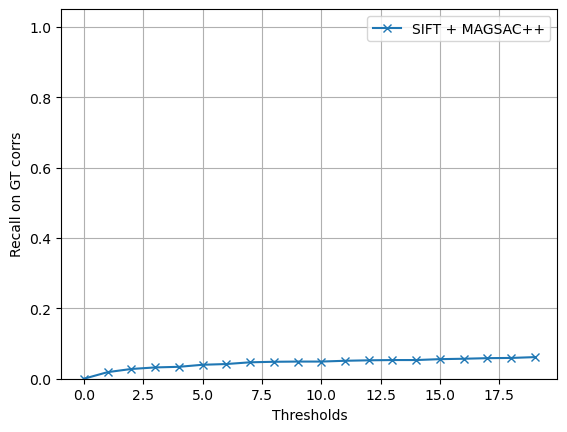
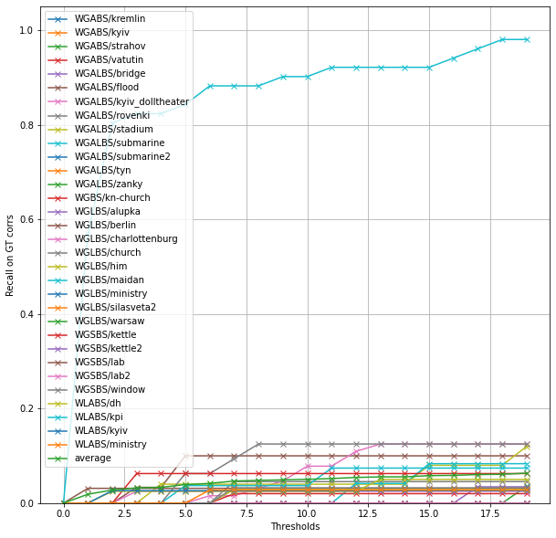

This package implements evaluation protocols for the WxBS and EVD datasets: - PCK for correpondence estimates - recall on ground truth correspondences given the estimated fundamental matrix - mean average accuracy given the estimated homography (for EVD)
Install
pip install wxbs_benchmark
How to use
Task 1: fundamental matrix estimation
I will show you how to benchmark a simple baseline of OpenCV SIFT + MAGSAC++ below.
import numpy as npimport cv2import kornia.feature as KFimport torchfrom kornia_moons.feature import*from tqdm import tqdmfrom wxbs_benchmark.dataset import*from wxbs_benchmark.evaluation import*import matplotlib.pyplot as pltdef estimate_F_SIFT(img1, img2): det = cv2.SIFT_create(8000, contrastThreshold=-10000, edgeThreshold=10000) kps1, descs1 = det.detectAndCompute(img1, None) kps2, descs2 = det.detectAndCompute(img2, None) snn_ratio, idxs = KF.match_snn(torch.from_numpy(descs1), torch.from_numpy(descs2), 0.9) tentatives = cv2_matches_from_kornia(snn_ratio, idxs) src_pts = np.float32([ kps1[m.queryIdx].pt for m in tentatives ]).reshape(-1,2) dst_pts = np.float32([ kps2[m.trainIdx].pt for m in tentatives ]).reshape(-1,2) F, _ = cv2.findFundamentalMat(src_pts, dst_pts, cv2.USAC_MAGSAC, 0.25, 0.999, 100000)return FFs = []subset ='test'dset = WxBSDataset('.WxBS', subset=subset, download=True)for pair_dict in tqdm(dset): Fs.append(estimate_F_SIFT(pair_dict['img1'], pair_dict['img2']))result_dict, thresholds = evaluate_Fs(Fs, subset)
plt.figure()plt.plot(thresholds, result_dict['average'], '-x')plt.ylim([0,1.05])plt.xlabel('Thresholds')plt.ylabel('Recall on GT corrs')plt.grid(True)plt.legend(['SIFT + MAGSAC++'])

We can also check per-image-pair results
plt.figure(figsize=(10,10))plt.ylim([0,1.05])plt.xlabel('Thresholds')plt.ylabel('Recall on GT corrs')plt.grid(True)for img_pair, recall in result_dict.items(): plt.plot(thresholds, recall, '-x', label=img_pair)plt.legend()
/opt/homebrew/Caskroom/miniforge/base/envs/python39/lib/python3.9/site-packages/ipykernel/ipkernel.py:283: DeprecationWarning: `should_run_async` will not call `transform_cell` automatically in the future. Please pass the result to `transformed_cell` argument and any exception that happen during thetransform in `preprocessing_exc_tuple` in IPython 7.17 and above.
and should_run_async(code)

F-estimation benchmark results
I have evaluated several popular methods in this Colab
Here is the resulting graphs.
If you are interested in adding your methods - open an issue.
Task 2: finding the correspondence in image 2, given query point in image 1
Check this Colab for an example of running COTR on for the correspondence estimation given the query points.
Loaded LightGlue model
Loaded LightGlue model
Loaded LightGlue model
Loaded LightGlue model
Loaded LightGlue model
Loaded LightGlue model
Loaded LightGlue model
Loaded LightGlue model
Loaded LightGlue model
Loaded LightGlue model
Loaded LightGlue model
Loaded LightGlue model
Loaded LightGlue model
Loaded LightGlue model
Loaded LightGlue model